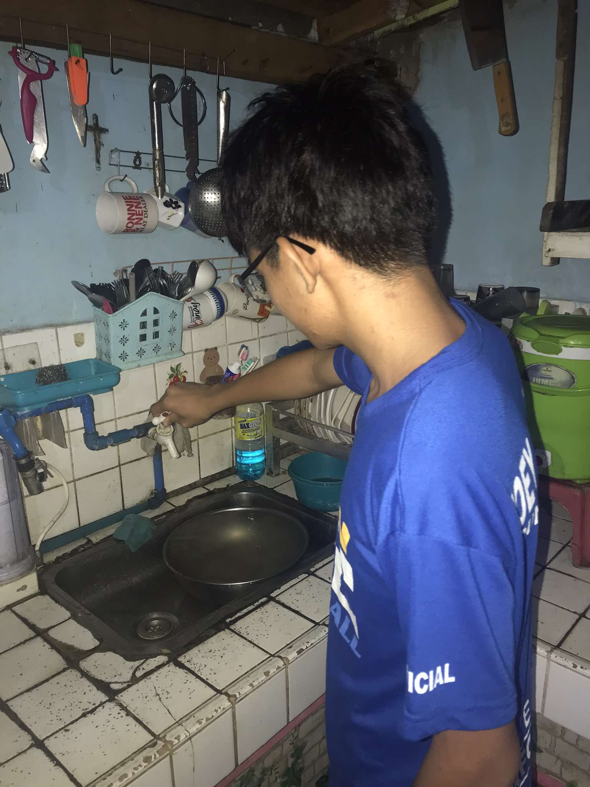
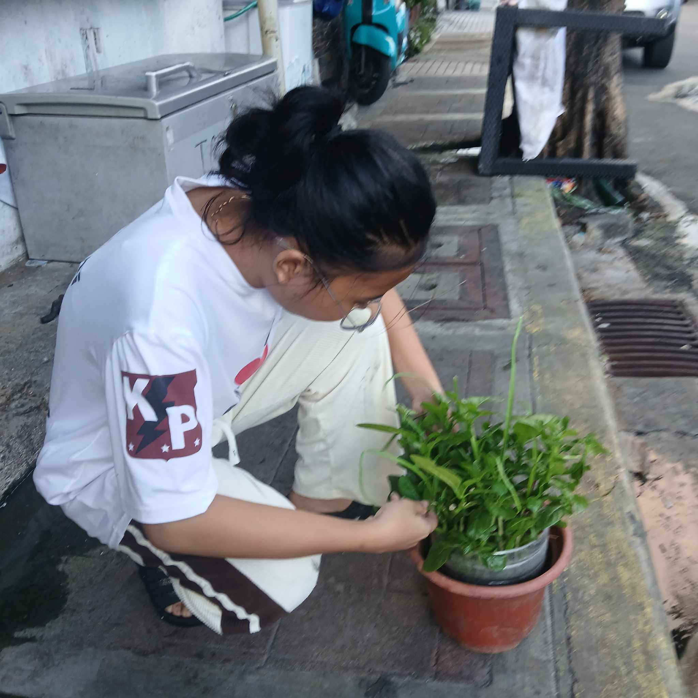

PANGKAT 3 BLOG
Ang pagbabago ng klima ay hindi lamang isang hamon, kundi isang banta sa ating kinabukasan. Kailangan nating magtulungan upang maprotektahan ang ating planeta. Ang pagbabago ng klima ay nagdudulot ng malalaking epekto sa ating kapaligiran, ekonomiya at kalusugan.
1. Gamitin ang publikong sasakyan tulad ng bisekleta kung sakaling malapit lang ang pupuntahan dahil nakatutulong ito sa pagbawas ng polusyon sa hangin.
2. Mag-recycle tulad ng muling gamitin ang mga plastic at papel.
3. Kumain ng masustansyang mga pagkain na mayaman sa fiber at hindi naglalaman ng maraming kemikal. Nakatutulong ito sa pagbawas ng Greenhouse gas emissions at mapapanatiling malusog ang ating katawan laban sa mga sakit.
4. Tayo ay mag-tipid ng tubig, dahil bawat patak ay mahalaga. Ang tubig ay isang yaman na hindi dapat sayangin. Sa simpleng mga hakbang tulad ng pag-off ng gripo kapag hindi ginagamit at paggamit ng timba sa halip na hose sa paghuhugas ng sasakyan, makakatulong tayo sa pag-iwas sa kakulangan ng tubig.

5. Magtanim ng mga halaman sapagkat nakatutulong ito sa pagbawas ng polusyon sa hangin.
- Pag-aaral at Pag-unawa: Alamin ang mga epekto ng pagbabago ng klima sa ating komunidad.
- Pagplano: Gumawa ng mga plano para sa mga sakuna tulad ng bagyo at baha.
- Pagpapababa ng Emisyon: Gumamit ng mga renewable energy source tulad ng solar at wind power.
- Pagpapanatili ng Likas na Yaman: Protektahan ang mga gubat, ilog, at mga hayopan.
- Pagpapalakas ng Komunidad: Magtulungan sa mga komunidad para sa paghahanda at pagtugon sa mga sakuna.
Sa Pagtutulungan, May Pag-asa Ang pagbabago ng klima ay hindi problema ng ibang tao lamang, kundi problema ng ating lahat. Ang paghahanda ay hindi lamang para sa mga sakuna, kundi para sa ating kinabukasan. Kung magtutulungan tayo, mayroong pag-asa pa ring maprotektahan ang ating planeta.
"PAGPAPANATILI NG KLIMA, PAGPAPANATILI NG BUHAY!"
Ang pangunahing dahilan ng pagbabago ng klima ay ang pagtaas ng greenhouse gases sa atmospera, dulot ng:
Narito ang ilang mga hakbang na maaari nating gawin upang harapin ang pagbabago ng klima:
Kung nais mong matuto nang higit pa o magbahagi ng iyong mga ideya, huwag mag-atubiling makipag-ugnayan:
Email: pangkat3blog@gmail.com